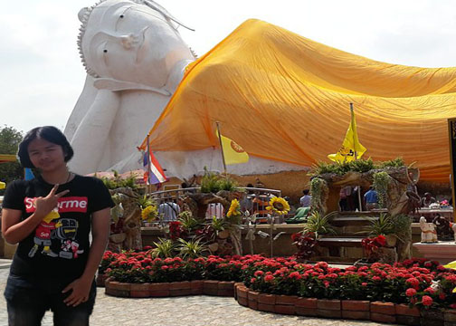

สถานที่ท่องเที่ยว
พระพุทธไสยาสน์ได้สร้างขึ้นในปี พ.ศ. 2413 โดย สมเด็จพระพุฒาจารย์ (โต พฺรหฺมรํสี) ได้มาทำการก่อสร้างพระพุทธรูป
ณ หมู่บ้านแห่งหนึ่ง (ในปัจจุบันคือวัดสะตือ) โดยสถานที่ก่อสร้างองพระประดิษฐานอยู่กลางแจ้ง ณ ริมคฝั่งวัดสะตือ ซึ่งอยู่ริมแม่น้ำป่าสักหรือเขื่อนพระรามหก
เป็นเขื่อนทดน้ำแห่งแรกของประเทศไทย สร้างกันแม่น้ำป่าสักเพื่อกักเก็บน้ำไว้ใช้ในการเกษตร
สร้างขึ้นในเขื่อนพระเฑิยรราชา ภายหลังได้มาเปลี่ยนชื่อเป็นเขื่อพระราม 6 ปัจจุบันอยู่ใวนความดูแลของกรมชลประทาทาน ลักษณะของเขื่อนเป็นบานเหล็ก